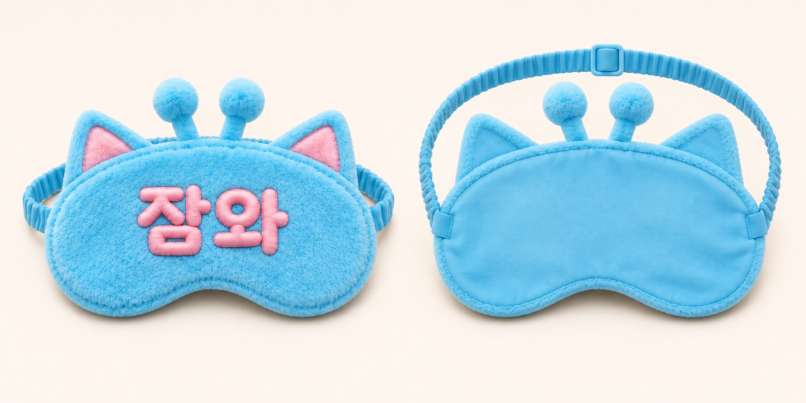
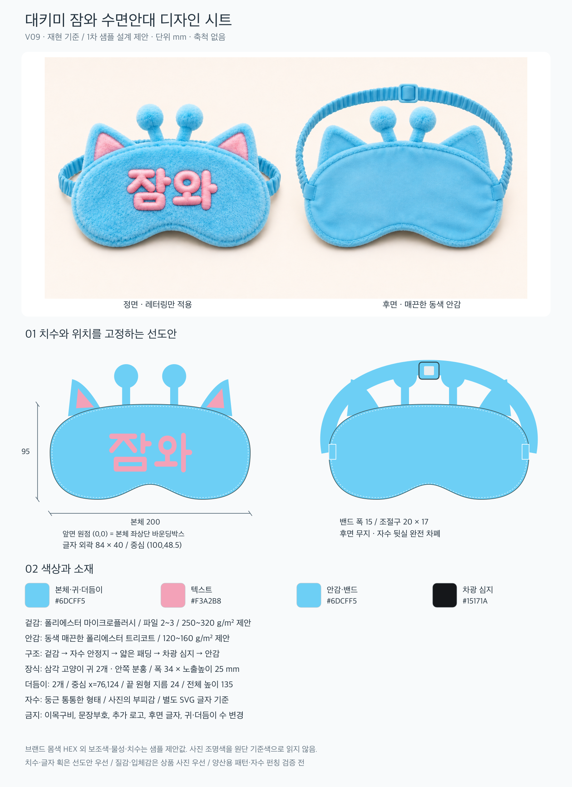

V09 · 2026-11-18 · 1차 샘플 제작 제안 / 양산 검증 전

모델 식별자 DK-SM-V09. 정면에는 오직 「잠와」 두 음절을 한 줄로 자수 처리한다. 문장부호·이목구비 없음. 본체와 후면 안감·밴드·더듬이 색은 #6DCFF5, 글씨는 #F3A2B8. 삼각 고양이 귀 2개 · 안쪽 분홍. 귀 완성 치수 제안 폭 34 × 노출높이 25 mm. 귀 위치: 왼쪽 x=18~52, 오른쪽 x=148~182; 귀 끝 y=-25. 전체 외곽 제안 200 × 135 mm (귀·더듬이 포함, 밴드 제외). 나머지 수치는 공통 치수표를 적용한다.
정면 사진의 질감과 글자 입체감은 시각 기준이다. 후면은 사진처럼 매끈한 무지 동색 안감이며 앞판 자수가 비치지 않는다. 귀 뒤쪽·더듬이 뒤쪽도 몸색으로 연속된다. 더듬이·귀·밴드가 모델마다 생략되거나 추가되지 않도록 한다.
2026-11-18 기준. 디자인 고정사항은 대키미 하늘색·분홍색 「잠와」, 외지몽 초록색·크림색 「졸려」, 이목구비 없음, 각 더듬이 2개이다. 기존 「잠온다」「졸리다」 및 졸린 표정 시안은 재현 참조에서 제외한다.
본 패키지는 제작 견적·1차 샘플 개발·AI 재현을 위한 설계 제안이다. 실제 제품 측정치나 사용자 승인된 양산 규격이 아니다. 미확정 치수·소재·후면 구조를 구체적인 제안값으로 설정했다. 제조사는 원단 실물과 1차 봉제 샘플로 치수·착용·차광·자수 품질을 검증한 뒤 패턴과 펀칭 데이터를 확정한다.
재현 우선순위는 최신 사용자 지시 → 사양서의 문구·장식 개수·배치 수치 → 디자인 시트와 SVG 선도안 → 상품 사진의 질감·입체감 순이다. 상품 사진은 AI 생성 시각화이며 자·색차계로 측정할 수 있는 원본이 아니다. 같은 조건이라도 생성 모델은 미세하게 다른 결과를 낼 수 있다. 글자와 실루엣을 정확하게 반복하려면 첨부 도안을 합성·편집 기준으로 사용하고, 사진을 전체 재생성하지 않는다.
완성 본체 바운딩박스 200(W) × 95(H) mm. 본체 상단 최상점 y=0, 좌측 끝 x=0, 우측 끝 x=200. x는 오른쪽, y는 아래쪽으로 증가한다. 중심선 x=100. 코 회피 곡선 최상점 (100,80): 바닥 y=95보다 15 mm 올라간다. SVG 베지어 윤곽을 기준으로 한다. 눈구멍은 없다.
귀·더듬이 포함 전체 높이 135 mm, 밴드 제외. 본체 두께 무압축 목표 7±2 mm, 파일 포함이며 자수 돌출 제외. 이 치수는 접촉 압력을 검증한 값이 아니다. 본체 폭·높이 허용차 ±3 mm, 장식 위치 ±2 mm, 자수 중심 ±1.5 mm, 자수 전체 폭·높이 ±1.5 mm를 1차 샘플 목표로 제안한다.
텍스트는 두 제품 모두 완성 외곽 84(W) × 40(H) mm, 중심 (100,48.5). 바운딩박스 x=58~142, y=28.5~68.5. 두 음절을 한 줄로 놓고, 문자별 폭을 강제로 동일하게 만들지 않는다. 둥글고 통통한 버블 스타일과 모서리 라운딩을 유지한다. 별도 SVG는 폰트명이 아닌 획 기반 재현 도안이다. 원래 첨부 이미지의 상용 폰트 파일이나 라이선스를 추정하지 않는다. 사진과 획 도안의 미세 차이는 1차 샘플 검토 시 대조한다. 자수 펀칭 완료 파일(DST/PES/EMB)은 포함하지 않는다.
더듬이 2개: 중심 x=76,124; 원형 끝 중심 y=-28, 완성 지름 24 mm; 줄기 폭 8 mm, 본체와 겹치는 고정 여유를 포함해 y=4까지 연장. 줄기에 철사·단단한 코어를 넣지 않고, 끝 구는 솜을 소량 넣은 부드러운 봉제 구조. 귀·더듬이는 외곽 봉제선에 삽입 고정하며 분리형 접착 장식으로 만들지 않는다.
본체 브랜드 기준은 대키미 #6DCFF5, 외지몽 #008C3A. 대키미 귀 안쪽과 글씨의 작업용 보조색 제안은 #F3A2B8, 외지몽 글씨의 크림 보조색 제안은 #F6EBD8. 차광 심지 제안 #15171A이며 완제품 외부에서 보이지 않는다. HEX는 화면 표현용 sRGB 기준이며 원단·실의 염색 지시나 Pantone/실번호와 동치가 아니다. 보조색은 사진을 바탕으로 수치화한 작업 기준이고 공식 IP 승인 색번호가 아니다.
전·후면·귀 뒷면·더듬이·밴드는 해당 캐릭터 몸색 계열로 통일한다. 조절구 역시 동색. 색상은 중립광 아래 실물 원단·자수실 스와치로 맞춘다. 모니터 하이라이트로 생긴 옅은 하늘색/연두색을 새로운 본체 염색색으로 고정하지 않는다.
| 부위 | 1차 샘플 제안 | 보이는 조건 |
|---|---|---|
| 앞판 | 폴리에스터 마이크로플러시, 파일 2~3 mm, 250~320 g/m² | 보송하고 촘촘한 짧은 결, 뻣뻣한 플라스틱 광택 금지 |
| 뒤판 | 동색 매끈한 폴리에스터 트리코트, 120~160 g/m² | 피부 접촉면에 앞판의 긴 털 없음 |
| 완충층 | 얇은 폴리에스터 패딩, 무압축 2~3 mm | 과충전 쿠션처럼 부풀지 않음 |
| 차광층 | 유연한 불투명 검정 폴리에스터 직물, 0.2~0.4 mm 제안 | 외부 노출·밝은 안감 비침 없음 |
| 자수 | 유광이 과하지 않은 폴리에스터 자수실 + 얇은 입체 심 | 원형 풍선 글자처럼 둥글되 봉제물의 실결 유지 |
| 귀·더듬이 | 본체와 동색 겉감, 최소 충전 | 부드럽게 휘고 바늘자국·봉제 경계 자연스러움 |
| 밴드 | 폭 15±1 mm 탄성 밴드, 동색 원단 커버 | 주름 분포 균일, 뒤틀림 없음 |
| 조절구 | 동색 플라스틱 1개, 외곽 약 20×17 mm, 슬롯은 밴드 폭에 맞춤 | 정면 중앙 장식으로 배치하지 않음 |
레이어는 바깥에서 앞판/자수 안정지 → 완충층 → 차광층 → 매끈한 안감 순이다. 자수는 앞판에 먼저 작업하고 뒤판을 마지막에 결합해 뒷실·안정지가 피부에 닿지 않게 한다. 자수 높이 목표는 앞판 바탕에서 1.5~2.5 mm. 획이 서로 붙거나 속공간이 막히지 않도록 펀칭 밀도와 심 두께를 샘플에서 조절한다. 원단의 복슬한 결 때문에 글씨가 묻히지 않도록 수용성 상지 사용 여부를 샘플 업체가 검토한다.
후면은 동색 무지 안감만 보인다. 글씨, 로고, 얼굴, 앞판 자수 뒷실을 추가하지 않는다. 양옆 밴드 고정 중심은 (0,47.5), (200,47.5), 고정되는 밴드 폭은 y=40~55이다. 시접 안 삽입 길이 15 mm 제안. 끝단 바텍 또는 박스 보강을 겉면 미관과 양립하게 적용한다.
밴드 유효 길이(본체 양옆 고정점 사이, 장착상태, 비신장) 300~420 mm 조절 범위를 제안한다. 본체 폭과 단순 합한 폐곡선 길이는 500~620 mm이나 실제 착용 둘레·압박감은 재질과 곡률의 영향을 받아 동일하지 않다. 성인용 1차 샘플에서 실측 착용 확인 후 확정한다. 재단 길이는 커버 주름·조절구 경로·겹침 길이에 따라 업체가 산출한다. 300~420 mm를 고무밴드 재단 길이로 사용하지 않는다.
후면 촬영에서는 밴드를 위로 아치 모양으로 놓아 안감 전체를 가리지 않는다. 이는 촬영 배치이고 착용 때의 고정 형상이 아니다. 뒷면을 볼 때 좌우 장식은 실제 뒤집힌 방향에 맞는다. 고양이 귀 뒤쪽은 하늘색이며 분홍 안귀가 후면에 반복되지 않는다.
1. 앞판 원단 수축·파일 방향을 확인한다. 두 제품 모두 파일은 정면 위에서 아래로 정리한다.
2. 앞판에 텍스트 자수를 먼저 놓고 글자 획·크기·중심을 대조한다.
3. 귀와 더듬이를 봉제·뒤집기·최소 충전하고 좌우 중심 좌표에 맞춘다.
4. 앞판·완충층·차광층·뒤판을 구성한다. 귀·더듬이·밴드 삽입부를 외곽 시접에 고정한다.
5. 외곽 마감, 뒤집기와 창구멍 마감 후 바인딩/눌러박기 형태를 사진처럼 좁고 부드럽게 정리한다.
6. 최종 스팀·털결 정리 후 자수·봉제·조절 기능을 확인한다.
시접 기본 제안 6 mm. 디자인 시트와 1:1 SVG는 완성선이며 재단선이 아니다. 시접·두께 먹힘·원단 늘어남·뒤집기 보정은 패턴사가 추가한다. 외곽 눌러박기 위치는 완성 가장자리에서 약 2.5~3 mm 안쪽, 땀길이 2.5 mm 제안. 사진에 보이는 좁은 외곽 마감의 최종 방식은 1차 샘플로 결정한다. 귀·더듬이·자수의 구조를 확인하지 않은 상태에서 바로 양산 패턴으로 전달하지 않는다.
항상 고정: 몸색과 텍스트색, 정확한 두 음절, 문장부호 없음, 귀 2개·더듬이 2개, 이목구비 없음, 정면 중앙 자수, 무지 동색 후면, 밴드 1개와 조절구 1개. 사진은 정면을 왼쪽, 후면을 오른쪽에 같은 크기로 놓는다.
금지: 「잠온다」「졸리다」로 되돌리기, 「잠와」의 ㅈ에 덧획을 넣어 ㅊ처럼 만들기, 「졸려」를 「졸리」「졸러」로 바꾸기, 분홍/크림 색상 서로 바꾸기, 눈·코·입·수염 추가, 크림 주둥이 패치 추가, 더듬이 1개/3개, 앞면 글씨를 뒷면에도 반복, 뒤집힌 글씨, 리본·행성·로고 추가, 원단 전체를 새틴으로 바꾸기, 털을 장모로 과장, 부피 큰 인형/베개로 만들기.
고정 촬영 레시피: 정면은 좌측, 후면은 우측. 두 본체 바닥선을 맞추고 동일 배율로 배치. 한 캐릭터만 한 이미지에 포함. 가로 2:1 구도, 권장 2400×1200 이상. 따뜻한 무지 아이보리 배경, 부드러운 좌상단 확산광, 얕은 자연 접지 그림자. 모든 귀·더듬이·밴드를 프레임 안에 담고 글씨와 봉제선이 선명해야 한다. 과도한 광각·피사계심도 흐림·광택·CG 윤곽광 금지. 앞·뒤가 같은 제품임을 유지한다.
AI 입력 세트는 캐릭터별 상품 사진 + 디자인 시트 PNG + 해당 제작사양서이다. 도안 입력이 가능한 모델에는 레터링 SVG와 정면 배치 SVG도 함께 넣는다. 사진은 소재·입체감 기준, 시트는 구조·좌표 기준으로 역할을 분리한다. 수정 때는 전체 재생성보다 이미지 편집을 사용하고 변경 부위 외 나머지를 보존하도록 명시한다. 모델 버전·비율·시드 옵션이 제공되면 함께 기록한다. 시드 고정만으로 서로 다른 모델 간 동일 이미지를 보장하지 않는다.
서체 이름만 지시하지 말고 이 패키지의 두 음절 외곽을 유지한다. SVG는 폰트 설치 없이 열리는 획 선도안이며 사진의 자수 폼을 모사한 새 재현 보조자료다. 실제 자수 외곽과 밀리미터 단위로 일치하는 자동 트레이싱·자수 펀칭 데이터는 아니다. 인쇄나 양산처럼 정확한 글자 고정이 필요한 경우 패턴·펀칭 담당자가 이 선도안과 사진을 대조해 승인용 자수 원본으로 정리한다.
화면 검수: 글자 유니코드 대조(잠와 U+C7A0 U+C640 / 졸려 U+C878 U+B824), ㅈ의 덧획·교차·잘림 없음, 둥근 글자 속공간 확보, 정면/후면 장식 개수 동일, 후면 무지, 밴드 연결 좌우 대칭, 색상 역할 정확, 제품 잘림 없음. 글자가 틀리면 시각적 분위기가 좋아도 불합격이다.
봉제 샘플 검수: 완성 치수와 자수 위치를 평평하게 놓고 측정, 좌우 균형과 코 회피 곡선 확인, 실뭉침·뜯김·비뚤어진 박음질·겉으로 나온 차광 심지 없음, 더듬이/귀/밴드 고정부 확인, 조절구 작동과 착용 압박 확인. 차광성·세탁 후 수축·이염·보풀은 실제 원단과 완제품으로 검증하며 현재 통과했다고 표시하지 않는다. 세탁라벨 문구는 검증 결과에 맞춰 제조사가 확정한다.
캐릭터별 상품이미지 PNG, 디자인시트 SVG/PNG, 1:1 정면 배치 SVG, 84×40 mm 레터링 선도안 SVG, 제작사양서 HTML, AI 재현 프롬프트 TXT를 묶었다. 공통 사양 JSON과 이 문서는 같은 제안값을 사용한다. SVG를 100%로 인쇄할 때만 1:1이며 프린터 페이지 맞춤 기능은 끈다. 별도 재단패턴/DST/PES/실물 컬러칩은 포함하지 않는다.
